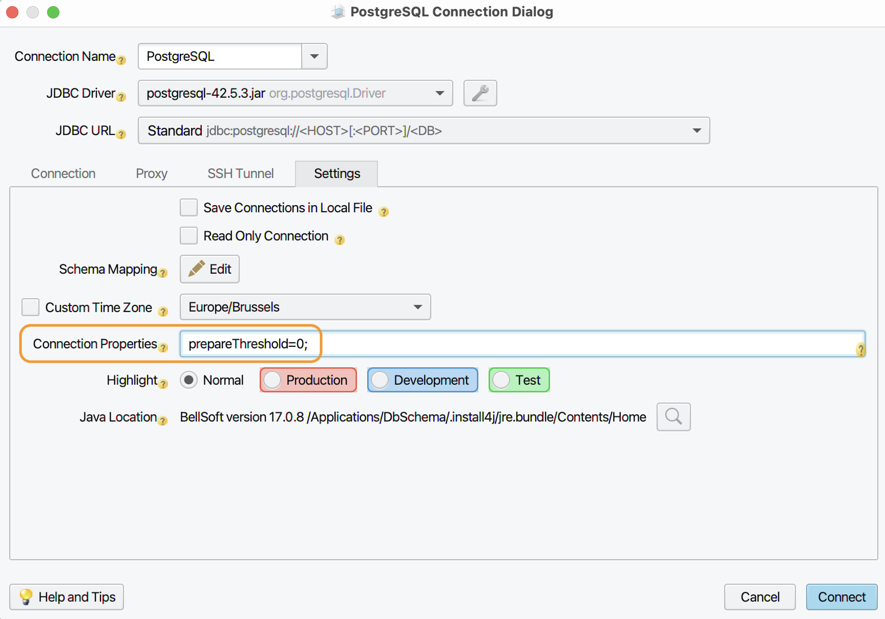

Success is no accident. It is hard work, perseverance, learning,
studying, sacrifice and most of all, love of what you are doing or
learning to do.
—Pele
DBSchema PostgreSQL client
We introduce a new tool: DBSchema. This database client does in
broadly the same as pgAdmin: communicate with the database server. You will be able to use this tool well in the larger assignment that accompanies
this OPO. As an example, we will create a simple schema with five
tables. Since we find that students often have some difficulty in
understand how 'foreign keys' and intermediate tables work, you will also do a
little exercise with INSERT INTO on this new schema.
Clients for PostgreSQL
.
As you know, you never address a database server (such as PostgreSQL)
directly. All communication is through a client. We used
pgAmin until now. Which is open source, free and also very suitable
for what we want to do. However, there are a lot of alternative clients:
Open source: DBeaver, SQuirrel, SQL Workbench/J, ...
We are now introduced to a commercial software tool: DBSchema.
Presenting DBS schedule
DBSchema is an advanced database management tool. It can
handle a lot of different DBMS: MySQL, PostgreSQL, Oracle, SQL
Server, Sqlite, etc. There is a so-called 'Free Community Edition' and
a 'Pro Edition'.
For a lot of things we want to do, the free version is sufficient,
whereas in the paid version there are some things that
might be useful for working out a larger task.
When you install DBSchema, you get the full
version for free.
Therefore, we prefer to wait as long as possible to install this software
install, until you start the big assignment
. After these two weeks, you can ask to extend the trial period of the pro
version for another two weeks as explained at https://dbschema.com/evaluate.html.
DBSchema has a good documentation. By the way, we are only using a limited portion of all the
features of this client software.
To "reverse engineer" a diagram
Usually we use DBSchema as follows: you draw a physical model and
DBSchema generates all the SQL code to build this model in PostgreSQL on
the server.
But it can also be done in reverse. In this piece, we show how to use DBSchema
reverse engineer an existing schema on our database server.
. That is to say that DBSchema connects to the existing
schema and reconstructs a physical model from it.
In the chapter 'One-to-many relationships'
you built a small model (consisting of two tables
'Training Component' and 'Lecturer') in the schema named your
r-number, in the database of your sequence. Now check through
pgAdmin whether that schema is indeed there? If not: create it
create via the steps in that section (ten minutes of work).
With the following roadmap, you will have DBSchema connect to our
database server and have this client convert your schema to a physical model.
As always: perform these steps yourself!
The following video how to import an existing schema into DBSchema and
how to change some settings afterwards. Below the movie are the
specific steps you need to take. You might find the combination
movie-step-by-step plan ideal? Just watch the movie first and then read the
steps in the assignment one by one and perform them?
My lector code (and thus the name of my scheme) is 'u0012047'.
Of course, in the following, replace this with your own
r-number.
Start pgAdmin and use the pooling connection to go to the database of
your series and in this to your schema. In my case I see that my
schema 'u0012047' contains the desired tables 'lecturer' and
'course section':
Just a quick test that these tables contain data:
SELECT *
FROM u0012047.opleidingsonderdeel; --en analoog met de tabel lector
So that looks good. Time to start DBSchema. On the
opening page, choose 'Start New Project' with the option
Connect to Database'. This can also be done from the menu, by the way: 'Model >
New connected to the database.
DBSchema can handle dozens of DBMS. Choose from the list the
by now familiar elephant:
In the next dialog box, under 'JDBC URL', choose the option
'Standard'. Then fill in the details further as shown in the
screenshot. As 'Database User', choose the local user you
created for the pooling connection and corresponding password (where
we use in the manual about told "save this password in a .txt file"). Obviously
choose for the pooling connection the correct number: the
screenshot shows the version of academic year 2022-23. At
'Database' you should probably type the name of the database of your
series type (e.g. 1TI9 etc).
In the 'Settings' tab, under 'Connection Properies' prepareThreshold=0;:

Now you can confirm this window with "Connect. If all goes well,
you will see the contents of the database. Now select only the
schema that you want to reverse engineer:
This is the result in DBSchema:
There are some things we don't want:
The comment box 'This is a layout ...';
the rectangle 'lector';
the table 'internet prices';
You can "drop" the first two (layout and rectangle). If you do that
to the table 'internet prices',
that table is effectively deleted on the server, so here
rather choose 'exclude from layout
when right-clicking on this table.
DBSchema for executing SQL queries
You can, of course, use DBSchema in the same way as pgAdmin,
for running queries, as the following video shows:
Building a physical model in DBSchema
.
'Reverse Engineering' is a fine tool to have, but what we usually
want is the reverse:
draw a physical model and build it on the database server. We'll look at that in this section. Again, a do-text, as you
used to from us by now.
The example below (from a movie database) is not only an
illustration of the steps to take in DBSchema, but we will
also use it to once again walk through all the steps of a larger task
through:
problem description;
conceptual model;
logical model;
physical model;
add data;
Description of a movie database
.
You're a movie buff and want to keep track of all the movies you've watched in a
database. A movie has a title, year of release and a
length in minutes.
We will assume for a moment, for didactic reasons, that each film has only one
director (which, of course, is sometimes not the case). You keep a director's name, nationality and date of birth.
You also want to give your film a rating (integer from 0 to 5).
Several actors may star in each film. An actor also has a
name, nationality, date of birth and gender (M, V or X). If an actor
plays in a movie, we also like to keep track of the name of the character that
the actor played in this movie. If an actor played multiple roles in
the movie, all the names come one after the other, separated by commas.
Conceptual model
We chose in the "modeling" section to think about possible natural primary keys already in the conceptual phase.
thinking about possible natural primary keys. This need not
have to be: there are also methodologies that do not think about primary keys until the logical model.
primary keys. Is a movie title unique in this respect?
Presumably not, as a lot of remakes demonstrate. Film title and year then? Or film title and director? In order to
for simplicity, we simply choose a film_id (just as you
as a student also have a unique r-number).
For actor and director we make the same choice. We can start with
compound keys to begin with, but that makes things a little
more difficult ...
Draw yourself a possible conceptual model for this film database. What
are the entity types? Attributes? Relationships?
As entity types, you undoubtedly recognize: film, actor and director,
each with a number of attributes. An actor's relationship to a
film "plays in," and a director directs a film. The conceptual
model can thus look like this:
Probably the only difficult thing in this model is the attribute 'role'
of the relationship between 'Actor' and 'Movie'. If you were to make this an attribute of
the entity type 'Actor', then each actor can only play one role
play ...
As for the cardinalities, there is some debate. Are
an actor even if you haven't played in a single movie? Ditto for
director. In our simplified show, each film has exactly 1
director.
Logical model
For the logic model, we decide that this database is in a relational data model.
relational data model
will be created. The choice of which DBMS exactly (MySQL, PostgreSQL,
Oracle, ...) is for later.
In this step, we think about tables and types of relationships between the
different tables.
Create a logical model for this task. Think about tables, keys
and types of relationships.
The relationship between film and director is a one-to-many relationship. Each film has precisely one director, but a director may have directed (zero
or) have directed multiple films.
The relationship between film and actor is a many-to-many relationship.
Every movie has zero or more actors, every actor plays in zero or
multiple films. You know from the chapter on logical modelingthat a many-to-many relationship must be modeled with a tusset table.
Physical model
Finally, in the last modeling step, we decide to concretely use PostgreSQL
so that we can also define the appropriate data types and
build the model on the database server. In this step, the tool
DBSchema comes in handy.
As always: a step-by-step / do-text ...
Create schema
.
In the professional (paid) version of DBSchema, you can first offline
design a model, save it, and only then synchronize it with the
database. In the free version, a schema must first exist on the RDBMS
and you cannot save the model offline. This is actually hardly an
objection for the larger task you get for this OPO, so we explain
this method.
First, create a new schema in your group's database (1TI9 etc.).
To do this, start pgAdmin and use the pooling connection to create a schema in the appropriate
database to create a schema named 'rxxxxxxx-movie' (using your own r-number).
you obviously use your own r-number). You remember how to create a new schema in a database?
You may get an error message (syntax error at or near "-") if you do not remember to enclose the schema name in double
quotation marks. This is usually not necessary, but because of
the special character '-' in the name, double quotes are
mandatory. If you had written the name of the schema with 'underscore' (_)
then you were allowed to omit them.
In DBSchema connect to this schema
.
We already did this at the beginning of the chapter, see 'reverse engineering'. Select the schema you just created!
Draw model in DBSchema
.
We now start from the logic diagram as the basis for the physical model.
We draw that physical model using DBSchema. Simultaneously with the
drawing, DBSchema builds the model on the database server in the schema.
Now follow the steps in the videos below and implement them yourself in your
own schedule.
We first create a schema via the pooling connection in pgAdmin, connect
then DBSchema to this schema and draw the first table:
Define tables 'actor' and 'movie':
Define the intermediate table and make all relationships between the tables
explicit by transferring keys:
In the end, you end up with this physical model:
Creating customizations in DBSCheme
.
You can modify the tables at any time in DBSchema e.g. by
double-clicking them. As an example, we add in two tables an
extra condition (CONSTRAINT) in two tables:
Query and save SQL code for the entire schema
.
When you draw the physical model, DBSchema sends SQL commands to the
database server. By the way, you can see those on the left side of the DBSchema
window, under the "SQL History" section.
You can have the entire SQL code generated at once via the menu choice
'Schema > Export Schema and data (F2)':
You then obtain a number of CREATE statements in this style:
CREATE SCHEMA IF NOT EXISTS "u0012047-film";
CREATE TABLE "u0012047-film".acteur (
id integer NOT NULL ,
naam varchar(60) NOT NULL ,
geboortedatum date NOT NULL ,
nationaliteit char(2) ,
geslacht char(1) ,
CONSTRAINT pk_acteur PRIMARY KEY ( id )
);
CREATE TABLE "u0012047-film".regisseur (
id integer NOT NULL ,
naam varchar(60) NOT NULL ,
geboortedatum date ,
nationaliteit char(2) NOT NULL ,
CONSTRAINT pk_regisseur PRIMARY KEY ( id )
);
CREATE TABLE "u0012047-film".film (
id integer NOT NULL ,
titel varchar(100) NOT NULL ,
jaar integer NOT NULL ,
lengte integer NOT NULL ,
rating integer ,
regisseur_id integer NOT NULL ,
CONSTRAINT pk_film PRIMARY KEY ( id ),
CONSTRAINT fk_film_regisseur FOREIGN KEY ( regisseur_id )
REFERENCES "u0012047-film".regisseur( id )
);
ALTER TABLE "u0012047-film".film ADD CONSTRAINT cns_film_rating CHECK ( rating between 0 and 5 );
CREATE TABLE "u0012047-film".acteur_film (
film_id integer NOT NULL ,
acteur_id integer NOT NULL ,
rol varchar(50) NOT NULL ,
CONSTRAINT pk_acteur_film PRIMARY KEY ( film_id, acteur_id ),
CONSTRAINT fk_acteur_film_acteur FOREIGN KEY ( acteur_id )
REFERENCES "u0012047-film".acteur( id ) ,
CONSTRAINT fk_acteur_film_film FOREIGN KEY ( film_id )
REFERENCES "u0012047-film".film( id )
);
Study this code carefully. Look especially at the CONSTRAINT statements.
Save this code in a text file, with extension .sql or .txt. This
file allows you, in pgAdmin, to create the entire schema at once.
create.
In the code, there is an ALTER TABLE statement. There is nothing
wrong with that, but it's a little nicer if you put what comes after the ADD
comes just add in the CREATE of the table 'movie'. For some
some reason DBSchema always does it through a ALTER TABLE.
Start pgAdmin and manually add the following information. The movie 'Star
Wars' was released in 1977. The film has a length of 121 minutes and
was directed by George Lucas (born May 14, 1944). George
Walton Lucas Jr. hails from Modesto, California, US. Harrison
Ford (Chicago, US, born July 13, 1942) plays the role of Han
Solo. The role of Princess Leia was for American actress Carrie
Frances Fisher (born October 21, 1956, died in 2016). From me
this movie 5 stars!
In a query tool in pgAdmin, add this information to your schema.
This is a slow way to add data, but it is a
good starting point. After all, it lets you think about exactly what data you
should add in what order.
Add the two actors:
INSERT INTO "u0012047-film".acteur VALUES (1,'Harrison Ford','1942-07-13','US','M');
-- ipv altijd de naam van het schema te vermelden had je ook het search_path goed kunnen zetten
INSERT INTO "u0012047-film".acteur VALUES (2,'Carrie Fisher','1956-10-21','US','V');
Then the director:
INSERT INTO "u0012047-film".regisseur VALUES (1,'George Lucas','1944-05-14','US');
Now we can populate the movie table:
INSERT INTO "u0012047-film".film VALUES (1,'Star Wars',1977,121,5,1);
Finally, the intermediate table can be completed so that we link
between actors and movies:
INSERT INTO "u0012047-film".acteur_film VALUES (1,1,'Han Solo');
INSERT INTO "u0012047-film".acteur_film VALUES (1,2,'Prinses Leia');
Via a CSV file
.
Always typing code with INSERT INTO ... VALUES ... is rather tedious.
In the chapter on CSV files we looked at a
faster alternative via importing a CSV file. Such a CSV file
can best be typed into a spreadsheet (Excel, Libre Office, Numbers, ...) and
then convert it to CSV. Of course, it remains manual work, but if you want a
small but good dataset it is justifiable.
Automatic data generation through a site
If you want to test your schedule with hundreds of films, directors and thousands of
actors, you need to move away from manually typing in information. If
you are really lucky you will find a dataset about movies, directors and
actors and you can start from that, omit columns, change columns, etc.
Most of the time you're not that lucky ...
You want realistic-looking data to test well. The actors
don't have to actually exist, as long as there is a string that can
be a name, a possible date of birth, etc.
To generate this kind of test data, there is of course
software. As an example, let's take a look at the website https://mockaroo.com. In the free version, you can have up to 1,000 rows generated per table.
The "actor" and "director" tables are easy, because they depend on
no other table. As an example, the following
video shows how to generate 1000 rows for the table 'actor'.
The other two tables ('movie' and 'actor_film') are a bit more difficult
because they depend on other tables via a strange key (FK, blue
arrow in the diagram). The table 'movie' is still relatively easy to
provide data. Each movie has a number of classic columns and a
column 'director_id'. This last column is a 'foreign key' because it
refers to a column that is a 'primary key' in another table (viz.
the table 'director'). Suppose you already have 100 directors (= rows in the table
'director'), then chances are that you gave them as id
a number from 1 to 100. So you can have the column 'director_id' be a
random integer from 1 to 100 to be generated.
For the intermediate table 'actor_film' you can do something similar. Suppose that
You have 100 movies and 500 actors. For 'film_id' you generate in Mockaroo
a random integer from 1 to 100 and for 'actor_id' idem, but up to 500.
but up to 500. But now comes the problem: the combination of
'movie_id' and 'actor_id' is a compound primary key.
So that means that the combination of both values must be unique. However, if you let Mockaroo generate 1000 combinations for both values
generate, you will notice that almost certainly some combinations appear more than
occur once. As a result, the INSERT INTO statements
that you extract from Mockaroo will give an error when you paste them and execute them
in pgAdmin. Nothing will be entered. Fortunately, in
pgAdmin you will see the error message from the DBMS indicating in which line
where the error occurs. You can delete that line, redo everything
in pgAdmin, delete the next duplicate line, etc. A bit annoying
but doable.
Automatic data generation in DBS scheme
In the paid version of DBSchema (that is, you get the first two weeks after installation on a
trial for the first two weeks after installation and can extend for another two weeks afterwards) has a data generator
a data generator. It works similarly to Mockaroo. The
big difference is that DBSchema does connect to the database and those
can execute generated inserts automatically.
And just this feature makes inserting intermediate tables here
a lot nicer than in tools like Mockaroo. In Mockaroo, you still had to see for yourself
what the primary keys of 'actor' and 'director' were (numbers from 1
to ...).
However, DBSchema knows what the primary keys are and will randomly choose one
of them.
With intermediate tables, the same thing happens. Again, it will then inevitably
occur that it will generate a combination of actor and movie that already
exists in the database. However, DBSchema continues to generate further rows until the
desired number is reached. Doubles are simply not added to the
database and the generator simply skips this combination.
We show the data generation in DBSCheme. If you can't choose the menu item 'data
generator' cannot be selected, then you have the free community edition of
DBSchema. You may then be able to use a form on the DBSchema site to
apply for additional two-week pro version.